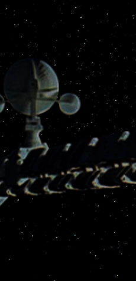
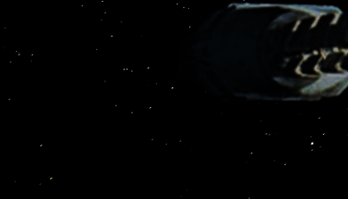

![X-ray-delta-zero to MC, zero-five-three-three. The computer has just reported another predicted failure of the AAC-unit. As you suggested, we are going to wait and see if it fails, but we are quite sure there is nothing wrong with the unit. If a reasonable waiting period proves us to be correct, we now feel that the computer reliability has been seriously impaired, and presents an unacceptable risk pattern to the mission. We believe, under these circumstances, it would be advisable to disconnect the computer from all ship operations and continue the mission under Earth-based computer control…](images/Text.gif)